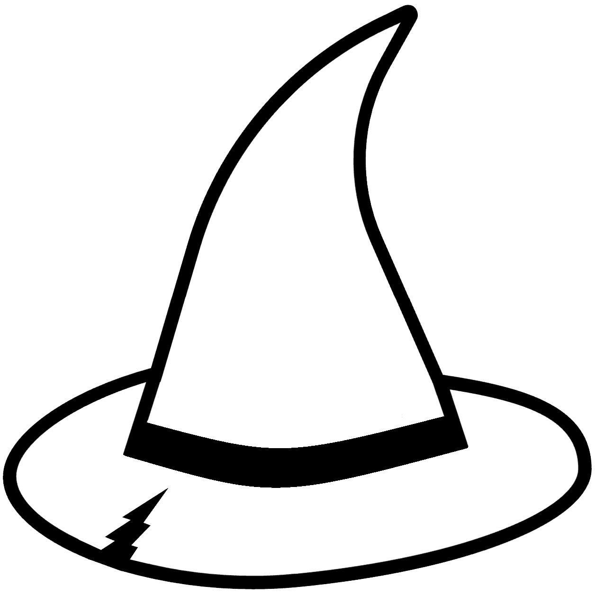

A launchpad for independent projects.
The Tilted Cap is the parent company behind a growing family of independent software projects. We build tools and products that solve real problems — each with its own identity, its own audience, and its own team.